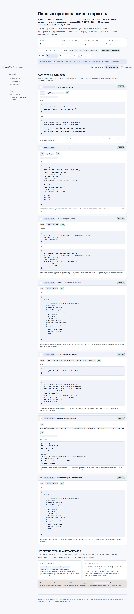
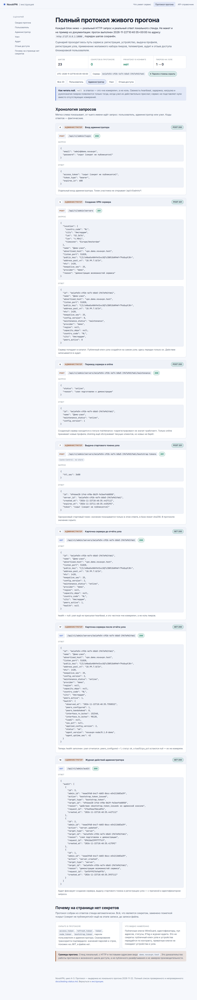
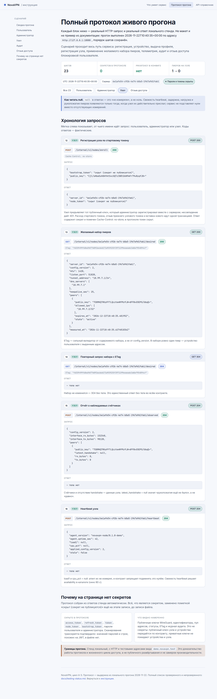
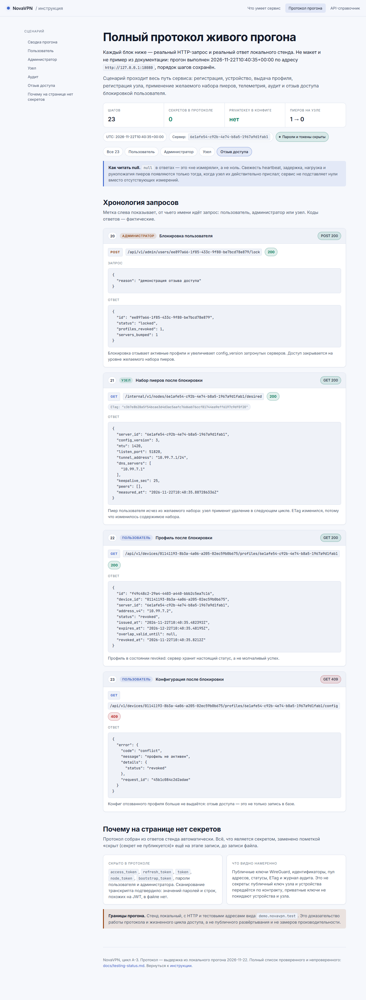
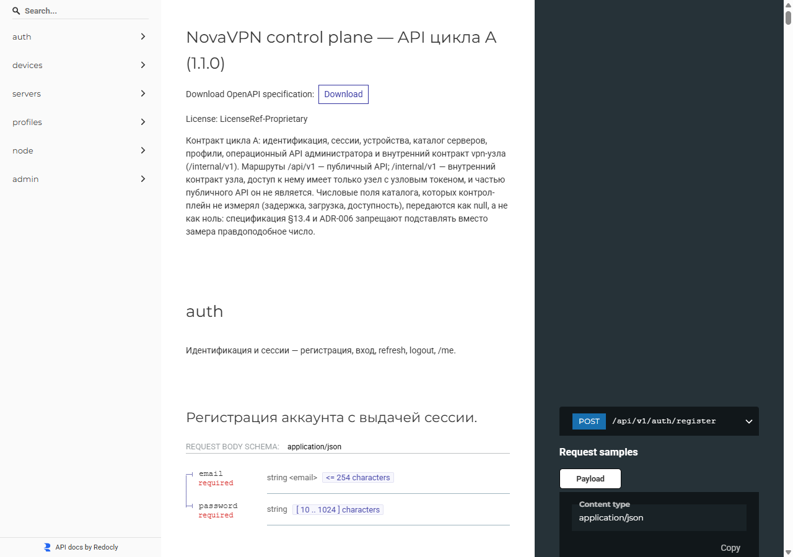
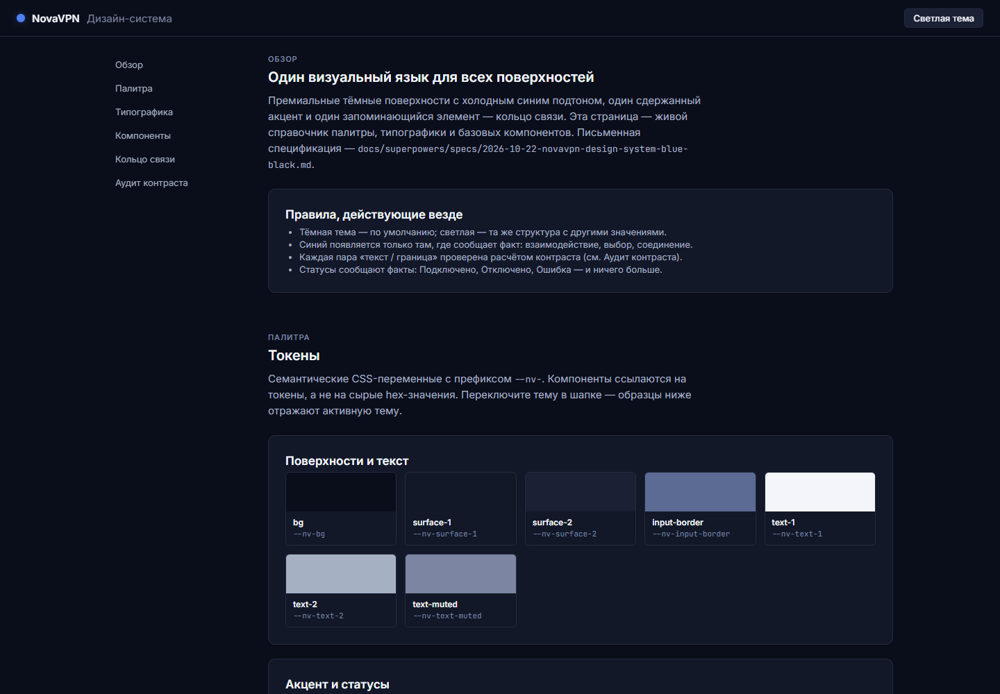
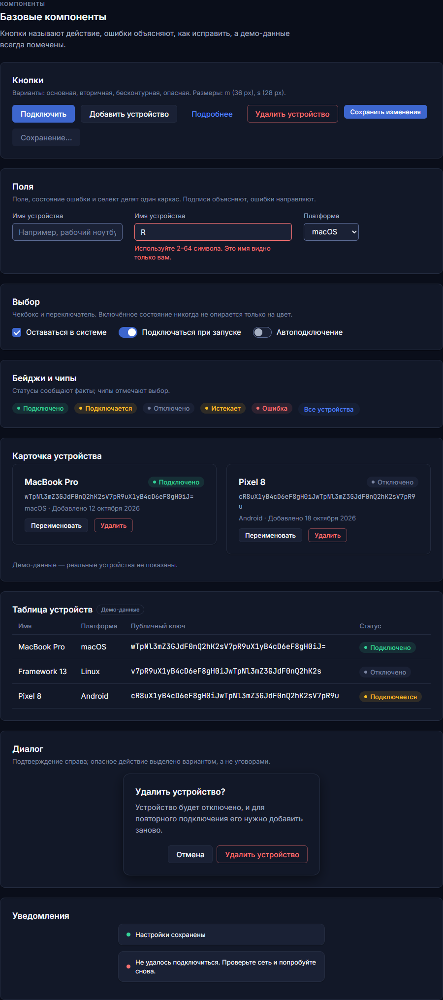
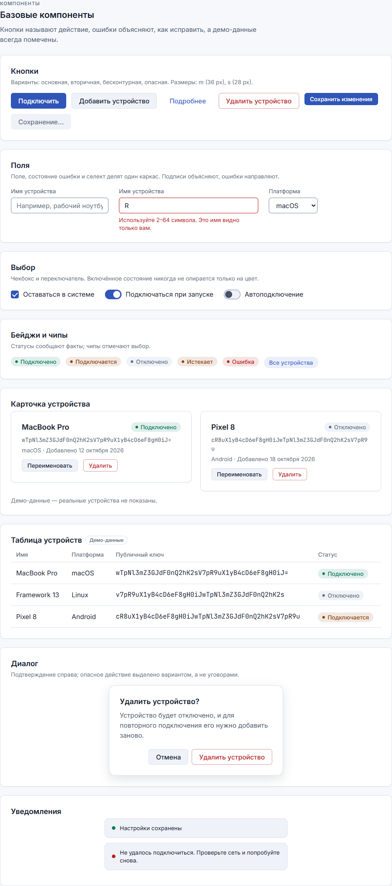

Что умеет NovaVPN сегодня
Серверное управление доступом к WireGuard: аккаунты, устройства, профили, узлы и отзыв доступа. Эта страница показывает возможности на реальном локальном прогоне — не на макетах и не на обещаниях.
Всё, что ниже, подтверждено запросами к работающему API: 23 шага от регистрации до блокировки пользователя. Скриншоты сняты с этих же ответов, секреты в них скрыты.
Что умеет сегодня
Восемь областей серверной части, каждая из которых прошла живой сценарий или интеграционные проверки.
Регистрация, вход и ротация токенов
Пароли хранятся как Argon2id-хеш. Access-токен короткоживущий, refresh-токен ротируется; повторное использование старого refresh обнаруживается и закрывает семейство сессий.
Публичный ключ WireGuard и жёсткий лимит
Устройство регистрируется по публичному ключу; приватный ключ на сервер не уходит. Лимит по тарифу — жёсткий; Idempotency-Key защищает от дублей при повторе.
Выдача, конфигурация и отзыв
Сервер выделяет туннельный адрес из пула и отдаёт конфиг [Interface]/[Peer] без строки PrivateKey. Ответ помечен Cache-Control: no-store. Отзыв профиля закрывает и выдачу конфига.
Доступность по свежему heartbeat
Новый сервер создаётся в maintenance и не принимает профили, пока администратор не переведёт его в online. В каталоге availability становится available только после свежего отчёта узла.
Желаемый набор с ETag и 304
Одноразовый стартовый токен, привязка к публичному ключу сервера, узловой токен. Узел забирает набор пиеров, получает 304 при отсутствии изменений и присылает отчёт о счётчиках и heartbeat.
Серверы, токены, блокировка и аудит
Отдельный вход администратора, управление серверами, выдача и отзыв стартовых токенов, блокировка пользователя с отзывом профилей. Каждое действие попадает в журнал аудита с причиной и request_id.
null вместо выдуманного нуля
Задержка, нагрузка, cpu_pct и latest_handshake возвращаются как null, если их не измеряли. Ноль означал бы измеренный ноль и вводил бы в заблуждение.
Ошибки, лимиты и идемпотентность
Единый конверт ошибки с request_id, ограничение частоты в Redis с fail-open, ограниченная идемпотентность критических операций и проверка живых ответов против OpenAPI в интеграционном наборе.
Быстрый старт на локальном стенде
Путь из README: поднять PostgreSQL и Redis, применить миграции, запустить API. Go на хосте не нужен — Makefile использует контейнерный тулчейн.
-
Исходники и настройки
Скопируйте образец окружения и заполните
NOVAVPN_JWT_SECRETслучайной base64-строкой не короче 32 байт. Секрет пишите прямо в файл, не в аргументы команд.git clone https://github.com/zanzibara82/nova-vpn.git cd nova-vpn cp -n infrastructure/docker/.env.dev.example infrastructure/docker/.env.dev -
Зависимости, схема и API
Порты в примере нестандартные, чтобы не задеть уже установленные PostgreSQL и Redis. Держите их одинаковыми для миграций и API.
export POSTGRES_HOST_PORT=55433 export REDIS_HOST_PORT=16380 export MSYS_NO_PATHCONV=1 make up-dev make migrate-up make run-dev -
Проверка живости
Отдельный
/debug/healthподтверждает только работу HTTP-процесса, а не доступность базы или тоннеля.curl --fail http://localhost:8080/debug/health -
Администратор
Администратор создаётся подкомандой CLI, пароль читается только из stdin. Рабочий пример со стендом, базой и созданием администратора — функция
setupвscripts/e2e.sh. Не вставляйте пароль в аргументы команды или историю терминала.
docker compose -f infrastructure/docker/docker-compose.dev.yml stop
останавливает контейнеры. make down-dev удаляет тома, а make migrate-down откатывает
миграции: это разрушительные команды, а не обычная остановка. Стенд не является резервной копией.
Живой прогон: 23 шага
Сценарий выполнен на локальном стенде 2026-11-22 по адресу http://127.0.0.1:18080. Ниже — кадры страницы полного протокола; на ней каждый шаг раскрыт запросом, ответом, заголовками и пояснением.
Пользователь: аккаунт, устройство, профиль
Регистрация, /me с планом internal-default (лимит 3 устройства), регистрация публичного ключа, выдача профиля и конфиг WireGuard без PrivateKey.

10.99.7.2 из пула 10.99.7.0/24. В конфиге есть PublicKey узла и нет PrivateKey — он остаётся на устройстве. Открыть в протоколеАдминистратор: узел, токен и аудит
Сервер создаётся в maintenance, переводится в online, получает одноразовый стартовый токен. Аудит фиксирует каждое действие с причиной и request_id.

online выдача профилей отклоняется. Аудит хранит реальные действия, а не декоративные записи. Открыть в протоколеУзел: регистрация, набор пиеров и телеметрия
Регистрация по стартовому токену и публичному ключу сервера, желаемый набор с сильным ETag, повтор с If-None-Match → 304, отчёт о счётчиках и heartbeat.

304 без тела. После heartbeat карточка сервера заполняется health, а каталог переходит в available. Открыть в протоколеОтзыв доступа: блокировка пользователя
Блокировка отзывает профиль, увеличивает config_version сервера и убирает пиер из желаемого набора. Конфиг отозванного профиля отвечает 409.

revoked, а не скрыт за «успехом». Отзыв доступа — это изменение состояния узла, а не только строка в базе. Открыть в протоколе201, 200, 304,
204 и 409. Это не пересказ спецификации: коды взяты из фактических ответов стенда.
Значения паролей и токенов заменены пометкой «скрыт» ещё при записи протокола.
API-справочник
Контракт описан в api-spec/openapi.yaml: 29 путей и 36 операций. Страница ниже собрана из этого файла генератором Redoc и открывается локально без сервера.
| Группа | Операций | Что покрывает |
|---|---|---|
| auth | 5 | Регистрация, вход, продление, выход, текущий профиль |
| devices | 4 | Регистрация и список устройств, отзыв, ротация ключа |
| profiles | 5 | Выдача, список, карточка, отзыв и конфигурация профиля |
| servers | 1 | Каталог доступных серверов |
| admin | 16 | Серверы, обслуживание, стартовые и узловые токены, пользователи, администраторы, аудит |
| node | 5 | Регистрация узла, желаемый набор, отчёт, heartbeat, ротация токена |

План и макет: что это не доказывает
Дизайн-система существует и проверена отдельно, но клиентского приложения пока нет. Снимки ниже — витрина запланированного интерфейса, а не работающий VPN-клиент.



Чего нет и что не проверено
Список намеренно не сокращён. Непроверенное не выдаётся за готовое, а неизмеренное — за ноль.
- Клиентские приложения, в том числе Windows
- Системная блокировка трафика (kill switch)
- Раздельная маршрутизация по приложениям
- Платежи и тарифные операции
- Пользовательский веб-кабинет
- Публичное развёртывание узла на VPS — задача 19
- Пропускная способность и показатели под нагрузкой
- Худший случай интервала применения отзыва на реальной инфраструктуре
- Работа с реальными сертификатами и внешним DNS за пределами стенда
not-run —
docs/testing-status.md. Решения и ограничения — README
и спецификации в docs/superpowers/specs.